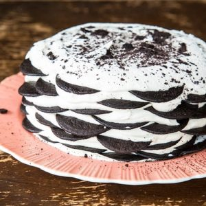

Featured Recipe: Chocolate Cookie Icebox Dessert
A delicious 11 layered Chocolate cake that will take Desserts to a whole new level only leaving you wanting more! The Chocolate cookies covered in whipped cream is most known for giving you the ultimate sugar rush! Perfect for birthdays, holidays and many more! Kids wont be able to resist.
Ingredients Needed:
Make sure you have the following on hand before you begin.
- 3 boxes of Nabisco Famous Chocolate Wafers
- 4 cups of whipping cream
- 3 tbsp sugar or to taste I don't like mine too sweet
- 1 tsp vanilla extract
Instructions:
Follow the instructions below to make a delicious Chocolate Cookie IceBox
- Combine the whipping cream, sugar and vanilla in a large bowl. Beat until light and fluffy
- On a large serving platter, swirl a couple of tablespoons of whipped cream onto the plate. This will hold the bottom cookies in place.
- Place 8 wafers in a circle on the plate, leaving room to place 4 on top to make a solid layer.
- Top with whipped cream
- Repeat for another 10-11 layers.
- Finish with whipped cream on top, then sprinkle with leftover broken cookies. There are always broken cookies.
- Wrap lightly with plastic wrap and refrigerate overnight until the next evening.
- Remove and slice carefully to serve!